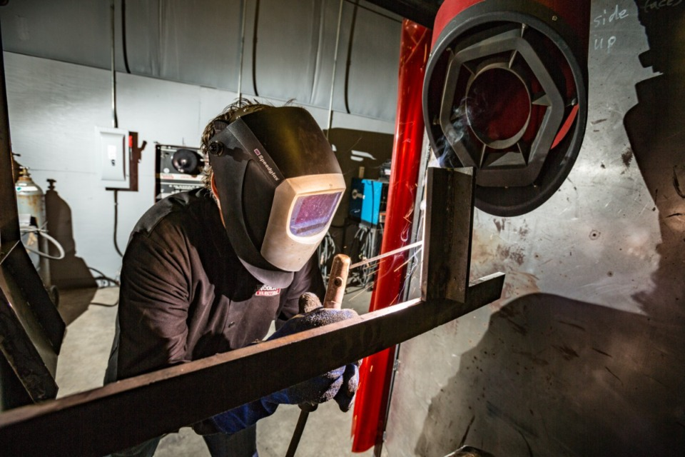

About Us

STEEL TECh is a non-profit, independent technical trade higher education institution operated and governed by a board of trustees. Operation is entirely independent of any other college system. STEEL TECH is accredited by the Council on Occupational Education (COE) and adheres to the standards of the Department of Education as well as, the state of Tennessee's higher education regulations.
New Begannings
The curriculum is occupationally focused and consists of one-year and two-year programs leading towards Associate of Applied Technology Degrees, Diplomas, and Certificates above the high school level. Some high school students may be permitted to enroll as dual enrollment students at the college while still attending high school.